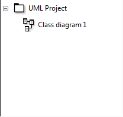

Pridanie diagramu
Nový diagram sa dá pridať buď pomocou kontextového menu v strome projektu
alebo pomocou hlavného menu "Projekt"⇨"Pridaj diagram". Z ponuky si vyberieme
"Class diagram", čiže diagram tried. Následne sa do stromu projektu pridá
"New Class diagram", ktorý sa zároveň otvorí v pracovnej oblasti aplikácie.
Tak isto, ako projektu, aj diagramu môžeme zmeniť názov.
